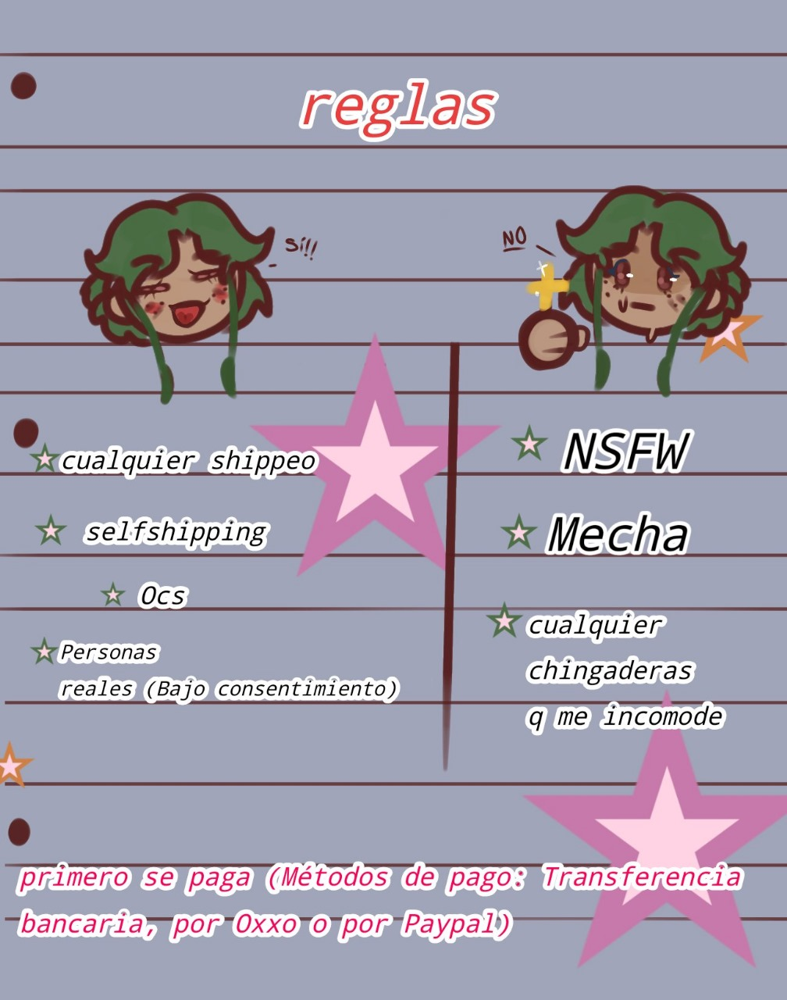

Hola, mi nombre es Jazmín. Tengo 21 años y soy de México. Me gusta mucho escuchar a Kanye West, Tyler, The Creator y Mac DeMarco. Me dedico medio tiempo a dibujar cositas que me gustan y el otro tiempo a jugar juegos que también me gusten.
